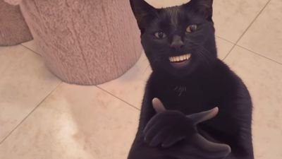
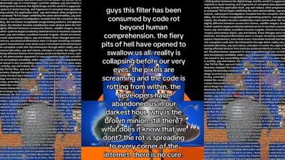

TOP 10 MEMES THIS MONTH
-

1. AI BLACK CAT SLOWLY CLAPS WITH HUMAN HANDS
Credit: image via Know Your Meme; original creators as documented there. © its owner; shown in small form for ranking and commentary. View originalWhy it ranks: KYM cites 3.8M views; finished 4th in October 2026 Meme of the Month (7% of votes). Nov 4 reads (10am PT): TikTok @asian5767 6.5M views; Instagram @merkurianin 3M likes; YouTube 'Black cat clapping (VR)' 30K views. -

2. 'WHILE THEY ARE OUT PARTYING...' -- 35M VIEWS
Credit: image via Know Your Meme; original creators as documented there. © its owner; shown in small form for ranking and commentary. View originalWhy it ranks: KYM cites 35M views / 160K likes. Nov 4 reads (10am PT): TikTok @ryu_da_sigma 51.3M views; Instagram @wallys_smash_burgers 203K likes; YouTube 'Watch This While They Are Out Partying BTW' 477K views. -

3. 'MALFOID': FEMALE DRACO MALFOY ART TAKES OVER -- OCTOBER MEME OF THE MONTH
Credit: image via Know Your Meme; original creators as documented there. © its owner; shown in small form for ranking and commentary. View originalWhy it ranks: October 2026 KYM Meme of the Month. 179K KYM views (Nov 5). -

4. H3'S ETHAN KLEIN CHEATING ALLEGATIONS SPAWN A MEME FACTORY, PER KYM
Credit: image via Know Your Meme; original creators as documented there. © its owner; shown in small form for ranking and commentary. View originalWhy it ranks: H3 cheating-allegation meme factory still on KYM Top Entries This Month (Nov 4); event page ~17,341 views. Keep attribution framing. Nov 4 reads (10am PT): TikTok @gmcnews 592K views; Instagram @kleinhila 319K likes; YouTube 'Victim card De-Klein'd' 359K views. -

5. ANAKIN SKYWALKER BECOMES THE FACE OF GEN Z MALE RAGE
Credit: image via Know Your Meme; original creators as documented there. © its owner; shown in small form for ranking and commentary. View originalWhy it ranks: KYM Anakin Skywalker Gen Z Male Rage Memes still Popular Right Now / Top Entry This Month (Nov 4 9am); ~14,844 KYM page views. Election-night Anakin edits also hit X News. Nov 4 reads (10am PT): YouTube 'They're Not Happy About Zoomer Anakin' 543K views. -

6. 'I'M SO SORRY' TIKTOK SLIDESHOW TREND -- 25.6M VIEWS
Credit: image via Know Your Meme; original creators as documented there. © its owner; shown in small form for ranking and commentary. View originalWhy it ranks: KYM cites 25.6M views. Nov 4 reads (10am PT): largest TikTok read directly @kamdan.13 604K views; YouTube 'Im So Sorry Trend Is STUPID' 489K views. -

7. MACAULAY CULKIN GOES AS THE 'THOUSAND-YARD STARE' MEME FOR HALLOWEEN
Credit: posted by @DiscussingFilm on X. © its owner; shown in small form for ranking and commentary. View originalWhy it ranks: 16.99M views / 351K likes on @DiscussingFilm (X API, Nov 5). Aged out of daily; still weekly/monthly. -

8. AI RUMPELSTILTSKIN 'TIP TOEIN' IN MY JORDANS'
Credit: image via Know Your Meme; original creators as documented there. © its owner; shown in small form for ranking and commentary. View originalWhy it ranks: KYM cites 9.8M views; 65,864 KYM page views; October Meme of the Month nominee (mentioned in results editorial). Nov 4 reads (10am PT): largest TikTok read directly @pfuzzypiffdoozy 6.1M views. -

9. 'CODE ROT' / 'YEP IT'S CODE ROTTED INDEED': GLITCH FILTER MEME SPREADS ON TIKTOK
Credit: image via Know Your Meme; original creators as documented there. © its owner; shown in small form for ranking and commentary. View originalWhy it ranks: KYM entry 13,901 views (pub Oct 22). Peak TikTok @tr0v0n 1.4M views; multiple 1M+ posts. LiMC explainer 931K views (6d). On KYM Popular. -

10. ALTMAN: DRAM IN HOME PCS IS 'QUITE TERRIBLE' ALLOCATION... INTERNET HIDES ITS DIMMS
Credit: posted by u/famsteve20015 on r/memes. © its owner; shown in small form for ranking and commentary. View originalWhy it ranks: #1 r/memes top-this-week and #4 top-this-month (Nov 5 ~11am PT).